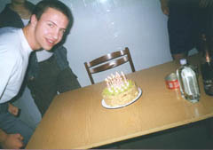
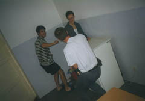
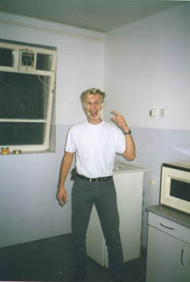
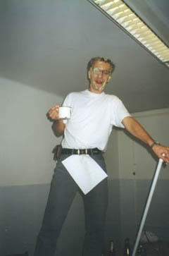

Az asztalon sajnálatos módon nem látszik az üvegek folytatása, de valljuk be, az a házi rettenetes is épp elég volt ami ott jobbszélen a képbe pofátlankodik. ÷)

A
fent látható TÖRLEY kikívánkozott a palackból, de a fiúk úgy gondolták,
hogy még pár ezer év evolúció kell, míg az ember bõrön át fel tudja majd
venni. ÷)

Vaki ad-hoc
ötlete nyomán elõször a két fülem lett tele tortával (egészen váratlanul
ért a dolog, nem is öltöztem alkalomhoz illõen ÷), aztán ez a két szelet
pisztáciatorta gyorsan szétkenõdött a fejemen. Tervezte és kivitelezte:
Csányamami.
Annyit tegyünk még hozzá, hogy azért nem tudtuk megenni a tortát mert
annyira vajkrémes volt. Lehet tippelni mennyi sampon fogyott mire azt
a zöld taknyot leszedtem a fejemrõl... ÷)

Valakinek
eszébe jutott, hogy "hiszen úgy néz ki mint a Fodor, háháháhá",
aki a Hálózatok és Rendszerek c. tárgyat oktatta nekünk, és nem tudott
másfél méteresnél rövidebbet köpni elõadáson. Így aztán pódiumra kerültem
(asztal) és egy pohár rettenet társaságában oktatni kezdtem egy "FODOR"
feliratú jegyzetlappal a gatyámban.
Kezemben a folyosó egyetlen felmosófókája, amirõl fogalmam nincs hogy
került oda! ÷)

Itt a nagy koccintás a végén, balról jobbra:
Szerdon, Vaki (szintén még babasegg arccal), Andrej, Csányamami, Myself
Szegény konyha ekkor még nem is sejtette hogy miken fog még keresztülmenni... ÷)))